Module 2 — Getting Started | Pages 45-68
Section 1 – Introduction
Section 1 – Introduction
Introduction
Operations Management Interface leverages both HMI and SCADA systems to deliver a
convergence platform for both Operational Technology (OT) and Information Technology (IT). Built
on the same core ArchestrA technology as System Platform, the Operations Management
Interface visualization engine provides rich, modern user experiences across platforms.
With Operations Management Interface, applications can be assembled based on a data model,
resulting in minimal engineering and increased manageability. Additionally, an out-of-the-box
framework provides native multi-monitor support.
Operations Management Interface is installed as part of Application Server. It can coexist on the
same computer as InTouch for System Platform.
Operations Management Interface Applications
An Operations Management Interface application is called a View Application, or just ViewApp.
ViewApps are represented as objects that are created, configured, and deployed from within the
System Platform IDE. Once deployed, they can be launched through the AVEVA OMI Application
Manager or the AVEVA InTouch Application Manager.
Features and Capabilities
The following are key features and capabilities of Operations Management Interface.
Runtime Preview
Operations Management Interface ViewApps can be tested in a runtime preview session, without
deploying or redeploying the ViewApps.
Built-in Navigation
ViewApps have a built-in navigation model that enables users to browse for and display graphics
and other types of content in a running ViewApp. The default navigation model is based on the
plant model of the Galaxy, but the navigation hierarchy can be customized.
Integrated Security
ViewApps have built-in security that is integrated with Galaxy security. ViewApp security is built
into the application’s navigation so that a navigation item can be shown or hidden at runtime based
on the logged-in user’s security credentials as defined for the Galaxy.
This section introduces features and components of AVEVA Operations Management Interface,
including screen profiles, layouts, and panes, and describes how they work as part of the
framework for a ViewApp.
Single Sign-On Service
Single sign-on service enables the ViewApp to provide common authentication for the OMI Apps
that are included in the ViewApp. In a running ViewApp, OMI Apps that require user authentication
run in the context of the logged-in ViewApp user.
Historical Playback
Operations Management Interface provides the ability to play back historical data in a running
ViewApp. If the data points are historized using Historian, users can switch to playback mode in
the running ViewApp to visualize historical data.
Native Support for Industrial Graphics
Operations Management Interface natively supports industrial graphics, such as symbols provided
in the Industrial Graphic and Situational Awareness libraries, as well as custom symbols created
with the Graphic Editor. Symbol features, such as animations, element styles, and Symbol
Wizards created using the Symbol Wizard Editor are supported.
Faceplates
Operations Management Interface supports faceplate compatibility mode for symbols. Symbols
enabled for faceplate compatibility mode allow users to manage a set of similar symbols using a
single symbol. Instead of creating a separate faceplate for each symbol, a faceplate can be
adapted for different symbol configurations by showing or hiding graphic elements on the faceplate
itself at runtime.
External Content
Content from outside the Galaxy can be linked to a ViewApp and displayed at runtime.
Touch and Multi-Touch Gestures
ViewApps support touch and multi-touch gestures, such as pan, zoom, swipe, close, and double-
tap. Additionally, the software provides configurations to help ensure operation safety for using
touch gestures for the ViewApp in the production environment.
Resolution Independence for Displays
Operations Management Interface eliminates the need to configure runtime graphic elements for
specific screen resolutions. Content will automatically resize to fit the target screen.
Custom Namespaces for ViewApps
ViewApp namespaces can be created for custom ViewApp attributes that can be used in scripts,
symbol references, animation configurations, and OMI App configurations.
Software Developer Kit
This toolkit lets you build custom applications that you can add and configure in your own
Operations Management Interface applications. The toolkit uses the .NET application framework.
It installs automatically when you install the Application Server software.
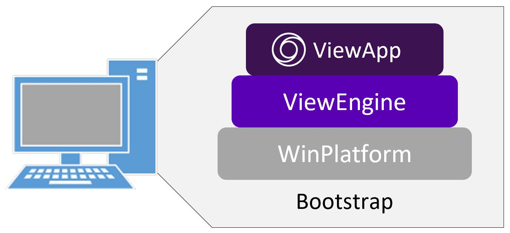
Section 1 – Introduction
Visualization Components
The following topics describe visualization components provided with Operations Management
Interface.
System Objects
System objects for creating Operations Management Interface ViewApps are provided in the
System Platform IDE.
$ViewApp is the base system object from which a ViewApp template is derived.
Configuration for the view application is done in the derived ViewApp template. An
instance can be created from the derived template and deployed to run the ViewApp.
$ViewEngine is the base system object from which an instance is created to host only
view applications. A derived ViewEngine instance can host ViewApp objects, as well as
InTouchViewApp objects. It supports common engine features, such as deployment,
undeployment, startup, and shutdown. It does not support redundancy.
The ViewEngine object must be assigned and deployed to a WinPlatform object.
Note that the ViewEngine object can:
Host and execute one or more ViewApp and InTouchViewApp objects. The scan rate of
the ViewEngine object determines the scan rate of all its hosted objects.
Determine if the ViewApps it hosts will run in read/write or read-only mode
Include custom attributes and scripts, as can be done with other automation objects
Contain its own set of runtime diagnostic attributes that can be monitored, alarmed, and
historized
Specify the Historian connection for historization
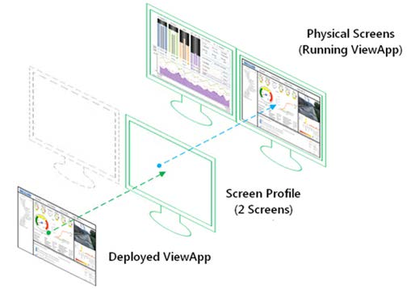
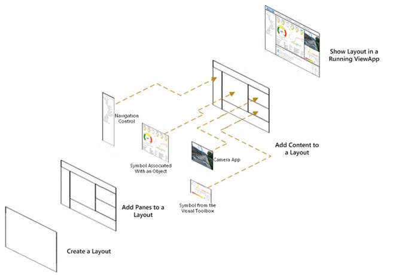
Screen Profiles, Layouts, and Panes
Framework components of an Operations Management Interface ViewApp include screen profiles
and layouts, which are created before you create a ViewApp.
A screen profile defines the physical characteristics of one or more client workstation monitors
that will show a running ViewApp, including how the screens are arranged with respect to one
another.
A layout consists of one or more rectangular areas of content for a screen, and is used to
determine how runtime information is displayed in a ViewApp. The rectangular areas within the
layout are called panes. The layout determines how the panes are positioned on the screen, as
well as other visual characteristics and runtime behaviors.
A pane is a subdivision of a layout and serves as a container for content to be displayed at
runtime. Each pane can be configured to hold zero, one, or more content items, such as symbols,
navigation trees, another layout, and others. A pane can encompass an entire screen or only a
portion of a screen.
Section 1 – Introduction
Symbols
Symbols from the Industrial Graphic and Situational Awareness libraries are symbols that you
create with the Graphic Editor and use as content for ViewApps.
OMI Apps
An OMI App is a collection of one or more controls with specific functions and capabilities, and is
primarily developed with Windows Presentation Foundation (WPF). Other technologies, such as
Windows Forms (WinForms) and HTML5, can also be used. Apps can be used as content in an
Operations Management Interface ViewApp to provide various types of information based on their
function and configuration, such as a navigation hierarchy, an interactive map, and more. A set of
default Apps is included in the Galaxy. Each performs a specific function as described below.
AlarmApp shows current and historical alarms and events in a running ViewApp. Alarms
and events display in the control based on queries and filters, within the context of the
current navigation.
ContentPresenterApp shows graphic items from one or more navigation items in a
running ViewApp. The pane in which the ContentPresenterApp resides shows a set of
thumbnails that match defined filter criteria, as configured for the ContentPresenterApp.
DocViewerApp shows a Microsoft Word document within a pane of a running ViewApp. It
initially shows the first page of the document at 100 percent zoom scale.
GraphicRepeaterApp shows a graphic repeated multiple times based on custom
properties assigned to references. At runtime, the graphic appears in a repeatable list
sorted by a single referenced custom property value common to each graphic in the list.
HamburgerApp controls the movement of a selected slide-in layout pane. At runtime, the
HamburgerApp appears as a button consisting of three horizontal lines. When users click
the button, the selected slide-in pane appears. Users can click the button again or click an
area outside of the slide-in pane to hide the pane.
HistoricalTrendApp allows values to be queried from a Historian database and plotted on
a trend chart in a running ViewApp. Two different chart types are supported: a trend curve
and an XY scatter plot.
ImageViewerApp shows an image within a pane of a running ViewApp.
InSightApp shows a visualization of historical operational data from Historian, making it
directly accessible by means of an active Insight browser session within a pane of a
running ViewApp.
MapApp shows geographic information on a map in a running ViewApp. Data overlays
can be placed over a base map as layers containing specific types of map data. Each
layer includes zoom controls appropriate for the type of data shown in the layer.
NavigationApp sets the current navigation item within a ViewApp to show the associated
content. It includes two controls:
NavBreadcrumbControl: This control shows the user-selected sequential path
through the ViewApp’s Navigation model in a running ViewApp. Each segment shown
in a breadcrumb display shows a selected navigation item.
NavTreeControl: This control shows the hierarchical organization of items in a
ViewApp’s Navigation model. When configuring a ViewApp, the Navigation model is
visible in the ViewApp Editor. At runtime, users can expand or collapse the navigation
hierarchy to show or hide navigation items and make selections. It also includes a
search tool for searching items from the navigation model.
PDFViewerApp shows a Portable Document Format (PDF) document within a pane of a
running ViewApp. It initially shows the first page of the document at 100 percent zoom
scale.
SpreadsheetViewerApp shows a Microsoft Excel spreadsheet within a pane of a running
ViewApp. It initially shows the first worksheet of the spreadsheet at 100 percent zoom
scale.
TitleBarApp provides functional components to a title bar for the ViewApp, such as
Home, Login, Language, Keyboard, and so on. Typically, it is placed in a top pane of the
ViewApp layout.
WWWebAppControls show web-based content in a running ViewApp. It includes two
controls:
SharePoint: This control can be used to integrate the SharePoint application within a
ViewApp. The SharePoint application is primarily used as a document management
and collaboration tool that is highly configurable, and its usage varies from
organization to organization.
WebBrowser: This control provides a full-featured, standards-compliant web browser
to the ViewApp. It can be used to browse web-based information, such as a website.
Custom Apps can be created with the Software Development Kit and imported into the Galaxy via
WPF interoperability. Other existing WinForm and WPF .NET controls can also be imported as
OMI Apps into a Galaxy and used in ViewApps.
Importing external controls into a Galaxy is covered in Module 12.
Widgets
Widgets are mini-apps that can run on your ViewApps. They generally display data, and can be
interactive and resizable. They typically fall into one of the following categories:
Information widgets typically display essential information and track how that information
changes over time. Examples of information widgets are weather widgets or clock
widgets.
Collection widgets display a collection of elements of the same type, such as a collection
of graphics. Collection widgets typically focus on two user workflows: browsing a collection
and opening an element of the collection to show its details.
A control widget displays often used functions that the user can trigger right from a
running ViewApp without having to open an App first. A typical example of control widgets
are music widgets that allow the user to play, pause or skip music tracks from outside the
actual music App.
Three widgets are provided out-of-the-box with Application Server: the Carousel widget, Datagrid
widget, Map_App widget, QRCode_Scanner widget, Teamwork widget, and the Web_Browser
widget. These are described in more detail in Module 6.
Section 1 – Introduction
External Content
External content refers to media content outside of a Galaxy that can be linked to a ViewApp and
displayed during runtime. An external content item identifies the path to the external media, such
as images, videos, documents, and web sites.
External content items can be linked directly to a layout pane or automatically filled through
navigation at runtime. This feature may replace some Apps provided out-of-the-box, such as
DocViewerApp, ImageViewerApp, and PDFViewerApp.
Workflow for Building a ViewApp
General steps for creating a Operations Management Interface ViewApp include:
Design standards for ViewApps: During the design phase, you can create a set of
reusable graphics and objects that serve as templates. Instead of creating unique
graphics and objects for each ViewApp, you can configure standard graphic and object
templates to suit the requirements of each ViewApp.
Build a screen profile and a layout: Create a screen profile of single or multiple monitor
configurations, including resolution and position. Create a layout to host content.
Build a ViewApp: To build a ViewApp, you derive a ViewApp template from the $ViewApp
base system object. Then, you initialize the derived ViewApp template with a screen
profile and layout. Once initialized, you can configure the ViewApp and add content items
to display at runtime.
Preview the ViewApp: As you configure a ViewApp, you can test it in a runtime preview
session prior to deploying or redeploying it.
Deploy a ViewApp: To deploy a ViewApp, a ViewApp instance must be created from the
derived ViewApp template and be hosted by a deployed ViewEngine.
Run a ViewApp: Deployed ViewApps are launched from the AVEVA OMI Application
Manager or the AVEVA Application Manager.
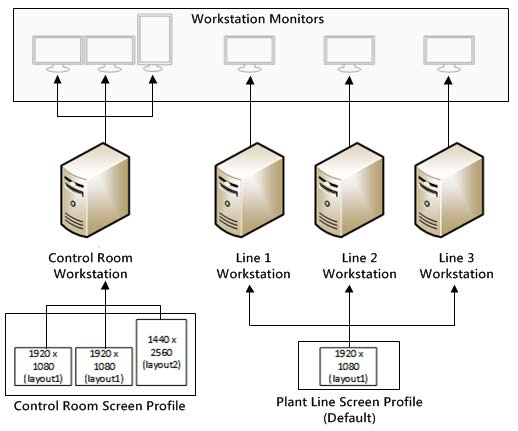
Section 2 – Screen Profiles
Section 2 – Screen Profiles
Introduction
A screen profile defines the physical characteristics of one or more client workstation monitors that
will show a running ViewApp, including how the screens are arranged with respect to each other.
Each screen defined in a screen profile represents a physical monitor.
Information that you need to know about the monitors that will display a ViewApp include:
Number of screens that will display a running ViewApp
Resolution of each screen that will be used in a screen profile
Orientation of each screen
Physical arrangement of the screens with respect to each other
Which screen will be the primary screen
Whether any of the screens are touch screens, and if so, whether you plan to enable
touch screen safety operation modes
Screen Profiles vs. Physical Monitors
Creating a screen profile does not rely on hardware monitors or screens. You can create a screen
profile first, and then configure the hardware monitors for the computer afterward.
For testing a multi-screen ViewApp in runtime, you do not need to have a complete set of physical
monitors with the corresponding screen profile connected to the test computer. You can start
testing with a single monitor. Multiple screens will display as separate windows to represent all the
screens included in the screen profile.
This section describes how to create and configure screen profiles and screens using the Screen
Profile Editor.
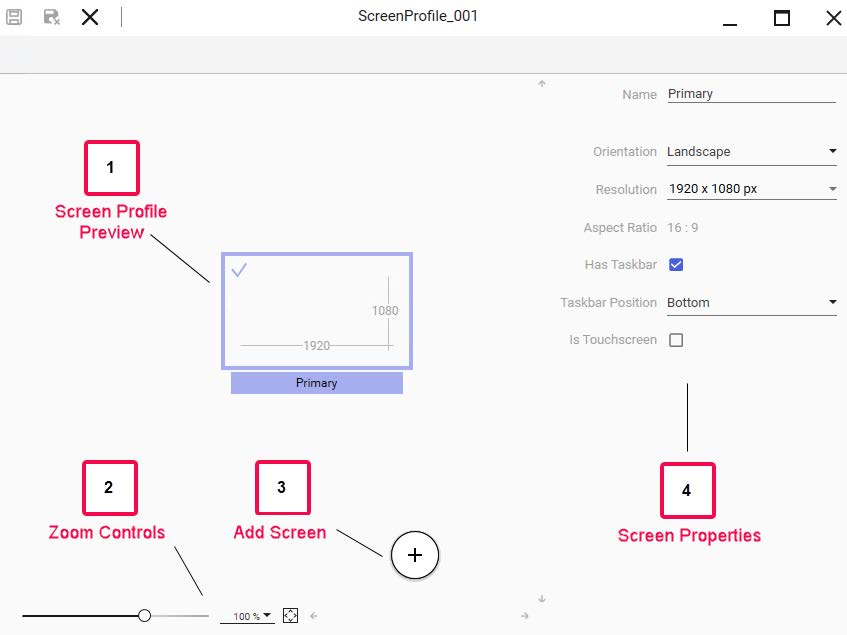
Create a Screen Profile
You create screen profiles from the Galaxy menu or the Graphics tab in the System Platform IDE.
From the Galaxy menu, select New | Screen Profile. Or, from the Graphics tab, right-click the
Galaxy name or a toolset name and select New | Screen Profile.
The screen profile appears in the Graphics tab with the default name of ScreenProfile_001 for the
first screen profile, and an identifying icon. If you create the screen profile by right-clicking a toolset
name, the screen profile appears in the toolset.
Screen Profile Editor
You configure screen profiles with the Screen Profile Editor. From the Graphics tab, double-click
the screen profile to open its editor.
(1) and (2) Screen Profile Preview Area: Graphical representation of the screen profile.
Includes controls and buttons to zoom the screen profile in the preview area.
(3) Add Screen Button: Adds a screen to the profile.
(4) Properties Area: Provides access to properties for the screen selected in the preview
area.
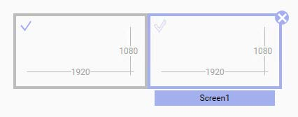
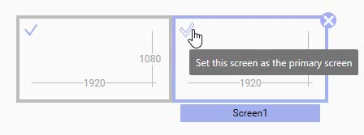
Section 2 – Screen Profiles
Add Screens
Initially, a screen profile contains one screen. This initial screen is named Primary and is set as the
primary screen for the profile. You can add additional screens, up to a maximum of 20 screens in a
screen profile.
When you add a screen to a profile, the new screen is added to the right of the selected screen.
Just select the screen for which you want to add a screen to the right of and click the Add Screen
button. The new screen appears with the default name of Screenx, where x is the number of the
screen added to the profile. The newly added screen is a duplicate of the screen from which it was
created, but you can configure it as needed.
Set Primary Screen
Every screen profile includes a primary screen. The primary screen represents the main screen of
a workstation that will show a running ViewApp, and is used as a reference point when applying a
screen profile to the workstation. The primary screen cannot be deleted from the screen profile,
but you can change which screen is set as the primary screen.
Within the screen profile, the primary screen appears with a solid blue check mark in the top-left
corner of the screen, even if the screen is not selected. Other screens, when selected, appear with
an empty blue check mark. You can select a screen and click the empty blue check mark to make
that screen the primary screen for the profile.
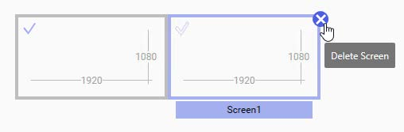
Remove Screens
You can delete any screen in a screen profile, except for the primary screen designated with a
solid blue check mark. When selected, screens that can be deleted appear with a Delete Screen
icon in the top-right corner of the screen. To delete the selected screen, just click the Delete
Screen icon.
Arrange Screens
The screen configuration area in the Screen Profile Editor shows the placement of screens in a
screen profile in relation to each other. The placement of the screens in the configuration area
should match how the actual screens are arranged on the workstation that will run the ViewApp.
You can use drag-and-drop operations to arrange the screens in the configuration area. However,
the following rules apply for screens in the screen profile:
All screens in a profile must be arranged to touch at least one other screen.
At least one corner of a screen must be aligned with the corner of another screen.
Screens must be arranged without overlapping other screens.
A screen arrangement in a screen profile supports up to a maximum of 20 screens.
Screen Properties
Each screen in a screen profile contains properties that define the physical and functional
characteristics of the screen. When a screen is selected, properties for that screen appear on the
right side of the Screen Profile Editor.
When configuring screen properties, some properties are related and appear only when another
property is checked. For example, the Taskbar Position property is only available if Has Taskbar is
checked.
Screen Property
Description
Name
Name of the selected screen. Names must be unique for each screen in a screen
profile.
Orientation
Either Landscape or Portrait. Changing the orientation of the screen changes the
width and height values shown for Resolution.
Resolution
Ratio of the width of the screen in pixels to the height of the screen in pixels.
Aspect Ratio
Automatically calculated ratio of the screen’s width to height in pixels.
Has Taskbar
Indicates whether the selected screen has a taskbar or not. Taskbar information is
considered when adjusting the size of a layout to fit a maximized screen.
Taskbar Position
Available if the Has Taskbar property is checked. Specifies the position for the
taskbar as Top, Bottom, Left, or Right of the screen border.
Section 2 – Screen Profiles
Resize Screens
You can change the size of a screen by selecting new horizontal and vertical dimensions in the
Resolution field. You can also change screen dimensions by changing the screen’s Orientation.
Changing the size of a screen affects the positioning of surrounding screens.
Touch Lock Levels
If the ViewApp will run on a touch screen, you can specify how touch gestures are supported while
the ViewApp is running with the Touch Lock Level property. The Touch Lock Level property is
available when the Is Touchscreen property is checked.
Touch Lock Level can be set to one of the following:
None: Touch lock is disabled and users can interact with the ViewApp or its content to the
full extent to which touch is supported by the screen on which the ViewApp is running.
Two Handed Operation: A touch lock icon appears on the screen of a running ViewApp.
Single-finger content selection gestures are blocked by the touch lock, but two- and three-
finger pane-level gestures are permissible. Pressing the touch lock icon deactivates the
touch lock while the icon is pressed. Users can press the touch lock icon with a finger on
one hand, and while the touch lock icon is pressed, use fingers on the other hand to
interact with the ViewApp using all touch gestures.
Commands Locked: A touch lock icon appears on the screen of a running ViewApp. All
touch gestures are blocked when the touch lock icon is active (locked). Mouse and
keyboard interactions are still possible. At runtime, pressing the touch lock icon
deactivates (unlocks) the touch lock, enabling interactions with the ViewApp using all
supported touch gestures.
The Touch Lock Position property specifies the placement of the touch lock icon on the screen.
Touch Lock Position is available when Touch Lock Level is set to either Commands Locked or Two
Handed Operation. Values for Touch Lock Position can be Bottom Left or Bottom Right. The touch
lock icon appears even if the physical monitor is not a touch screen.
The following shows an example of the touch lock icon.
Is Touchscreen
Determines how touch gestures are supported while the ViewApp is running. If
checked, Touch Lock Level can be configured. If not checked, touch screen lock
features are not used.
Touch Lock Level
Available if the Is Touchscreen property is checked. Can be None, Commands
Locked, or Two Handed Operation.
Touch Lock Position
Available if Touch Lock Level is Commands Locked or Two Handed Operation. The
position for the touch lock can be Bottom Left or Bottom Right.
Screen Property
Description
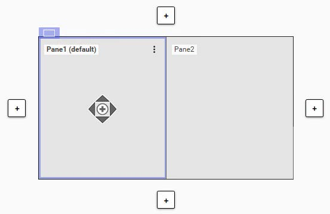
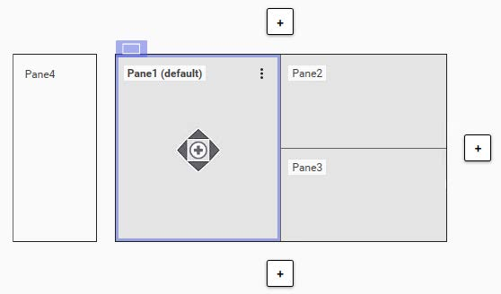
Section 3 – Layouts and Panes
Section 3 – Layouts and Panes
Introduction
A layout defines the organization of one or more rectangular areas of a screen called panes,
which contain content shown in a running ViewApp. A pane is a subdivision of a layout and is a
container for content. Content can be symbols, Apps, or a layout assigned from another layout.
A layout also defines the behavior and types of interactions supported by each pane. Panes can
be configured to support runtime operator behaviors, such as panning, zooming, or resizing.
For example, the following shows a layout that contains two panes.
The following shows a layout that contains four panes. Pane4 is a slide-in pane, described later in
this section.
This section describes how to create and configure layouts and panes using the Layout Editor.
Create a Layout
You create a layout from the Galaxy menu or the Graphics tab in the System Platform IDE. From
the Galaxy menu, select New | Layout. Or, from the Graphics tab, right-click the Galaxy name or a
toolset name and select New | Layout.
The layout appears in the Graphics tab with an identifying icon, and the default name of
Layout_001 for the first layout. If you create the layout by right-clicking a toolset name, the layout
appears in the toolset.
Layout Editor
You configure layouts and panes with the Layout Editor. From the Graphics tab, double-click a
layout to open its editor.
The interface in the Layout Editor provides two pages:
Build page: This page provides a set of editing components and properties for a layout,
its panes, and any assigned content. It includes components for selecting layout modes
(Fixed or Responsive); adding, resizing, and removing panes; assigning content to panes;
and setting properties for the layout, its panes, and content.
Script page: This page provides an environment for creating and editing layout scripts.
Layout scripts are covered in Module 13.
The Layout Editor lets you to choose between fixed layout mode and responsive layout mode, and
provides two different build views for configuring the layout, its panes, and content.
Fixed layout mode: Set the layout to this mode if it is intended to be used in a ViewApp
that will be viewed exclusively on desktop-type monitors or similar displays. This is the
default layout mode, and the Build view displays as normal layout view by default.
Responsive layout mode: Set the layout to this mode if it is intended to be used in a
ViewApp that will be viewed with a mix of devices, such as smart phones, tablets, and
monitors. The Build view displays as Responsive View after the layout mode is set to
Responsive mode.
In either Build view, you can select objects, controls, Apps, or graphics from the Toolbox and
Assets tabs and drag the content to the panes.
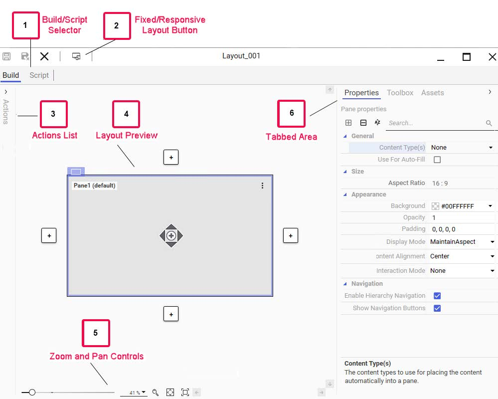
Section 3 – Layouts and Panes
The figure below shows the Layout Editor on the Build page for a layout that is set to Fixed layout
mode.
(1) Build/Script Selector: Switches between the Build and Script pages of the Layout
Editor.
(2) Fixed/Responsive Layout Button: Toggles the Build view between the default fixed
layout view and the responsive layout view.
(3) Actions List: Shows a list of content associated with panes in the layout. Options are
available from the list to edit the content or remove the content.
(4) and (5) Layout Preview Area: Graphical representation of the layout being
configured, showing the arrangement of the panes in the layout. Includes controls and
buttons to zoom and pan the layout being configured in the preview area.
(6) Tabbed Area:
Properties tab provides access to all available properties for the layout, a selected
pane, or associated content in a pane.
Toolbox tab provides access to symbols and Apps from the Graphics tab.
Assets tab provides access to the Model view of the Galaxy.
A search field is available in the tabbed area, allowing you to search for properties,
Graphics tab items, and assets from the Model view. A preview area is available at the
bottom of the tabbed area for previewing available content from the Graphics tab or Model
view.
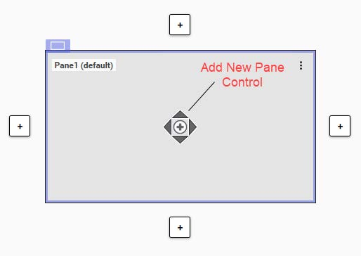
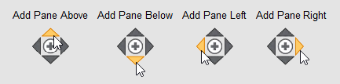
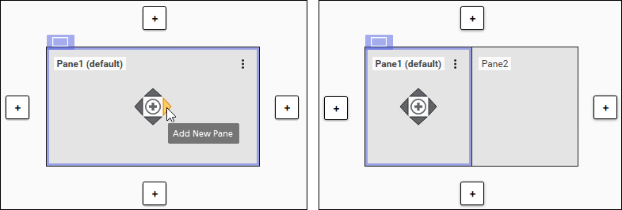
Add Panes
Initially, a layout contains one pane. This initial pane is named Pane1 and it is set as the default
pane. In the example below, the pane is selected and an Add New Pane control is visible in the
middle of the pane.
You can use the Add New Pane control to add panes to a layout. Depending on where you click
the Add New Pane control, you can add panes above, below, to the left, or to the right of the
selected pane.
The following example shows adding Pane2 to the right of the selected pane, which is Pane1.
You can also add panes by using a pane option. See the topic “Pane Options” on page 2-21.
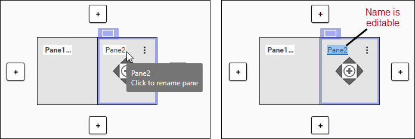
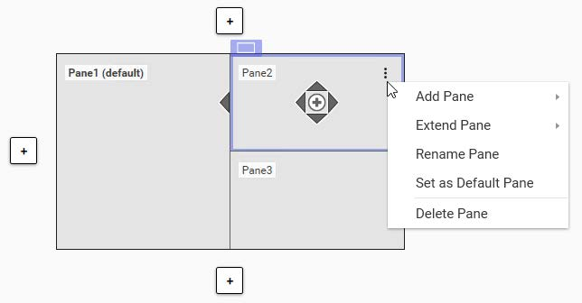
Section 3 – Layouts and Panes
Rename Panes
You can rename a pane by selecting the pane you want to rename and then clicking the name of
the pane. The name of the pane becomes editable and you can enter the new name.
You can also rename a pane by using a pane option. Note that you cannot rename a pane by
entering a name for a pane property.
Pane Options
You can specify options for a pane, such as adding a pane, extending a pane, renaming a pane,
deleting a pane, and more. To access pane options, select the pane you want to choose options
for and click the vertical ellipsis icon in the top-right corner of the pane. You can also right-click the
selected pane to view pane options.
Options shown in the above example are:
Add Pane: Add a pane to the left, right, above, or below the selected pane. You can also
add a pane using the Add New Pane control. See the topic “Add Panes” on page 2-20.
Extend Pane: Extends the selected pane. Available if the pane can be extended.
Rename Pane: Enables the selected pane to be renamed. You can also rename a pane
by selecting the name displayed in the selected pane. See the topic Rename Panes.
Set as Default Pane: Sets the selected pane as the default pane. This option is not
available if the selected pane is already set as the default pane.
Delete Pane: Removes the selected pane from the layout. If the removed pane is the
default pane, the remaining pane with the largest space within the layout is assigned as
the default pane.
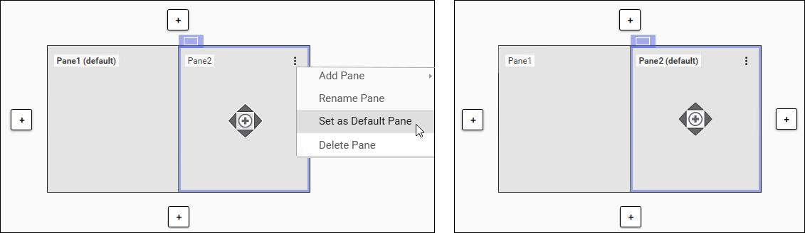
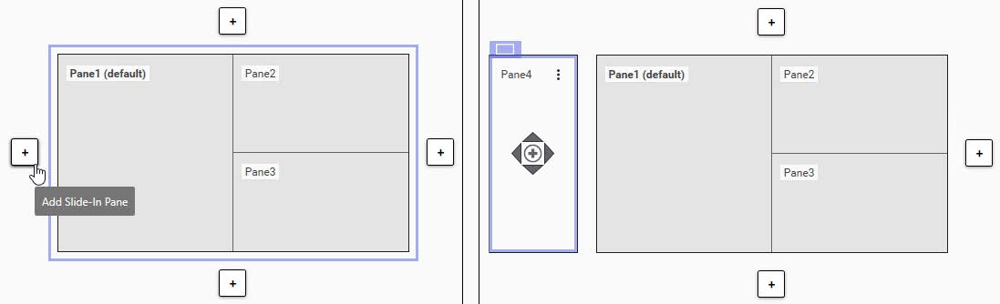
If the selected pane contains content, additional pane options are available:
Edit
Layout Editor to edit the layout added as content for the pane.
Remove Content: Removes the content added to the pane.
Pane Properties/Content Properties: Select to view the properties of the pane or the
assigned content.
The edit and remove content options are also available from the Actions list.
Default Pane
A layout includes a default pane, which is the pane that is most likely to be used to display
changed content during runtime. The pane designed as the default in the layout is shown with the
word “default” to the right of the name of the pane.
New layouts contain one pane, and that pane is designated as the default pane. If you add panes
to your layout, you can set a different pane as the default pane. To do so, select the pane that you
want to set as the default. Click the vertical ellipsis in the top-right corner of the pane or right-click
the pane to show pane options, and then select Set as Default Pane.
Slide-In Panes
Layouts can have a slide-in pane configured at each border of a layout window. During runtime,
slide-in panes are hidden until the user selects a button on the border of the ViewApp window to
make the slide-in pane visible and show its contents.
To add a slide-in pane to a layout, click the Add Slide-In Pane button on the side of the layout
where you want the slide-in pane. The following example shows a slide-in pane added to the left
side of the layout.
Section 3 – Layouts and Panes
A slide-in pane at the top or bottom of a layout always spans the full width of the layout. A slide-in
pane on the right or left of a layout always spans the full height of the layout. However, you can
change the height of slide-in panes at the top or bottom of the layout window, and you can change
the width of slide-in panes on the right or left side of the layout window. This is done by clicking
and dragging the edge of a slide-in pane to change its width or height.
All standard layout configuration operations can be used for a slide-in pane, with one exception: A
slide-in pane cannot be set as the default pane for the layout.
Assign Content to Panes
You can manually assign content to panes from the Toolbox and Assets tabs on the right side of
the Layout Editor, depending on whether you want to add content from the Graphics tab or an
asset. The types of content that can be assigned to a pane include symbols, OMI Apps, layouts,
external content, and widgets.
For example, if you wanted to add a symbol from the Industrial Graphic Library, you could select
the Toolbox tab, expand the Industrial Graphic Library item to find the symbol, and then drag the
symbol to the pane. A preview of the symbol appears in the pane, and an item is added to the
Actions list.
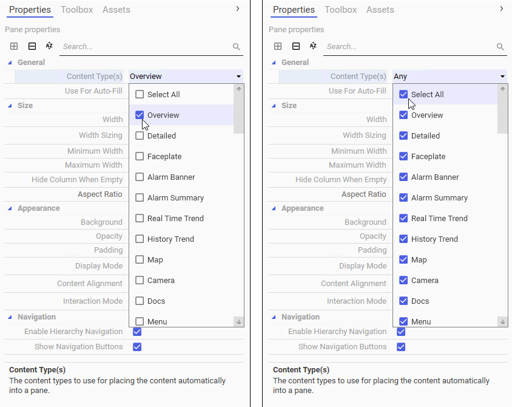
Apply Content Types to Panes
Content Type(s) is one of the properties for a layout pane. When you configure a pane in the
Layout Editor, you can specify content types for the pane, which determine the types of content
that can be displayed in the pane at runtime.
The default content type for a pane is None, which means that no content types are selected for
the pane by default. However, you can configure the Content Type(s) property to assign one or
more specific content types to the pane. The None content type disables the Auto-Fill feature.
To configure the Content Type(s) property for a pane, click the down-arrow for the property to
show all available content types in a drop-down list and check the ones you want to assign to the
pane.
To configure a pane to display specific types of content, check only the ones you want to
apply. If all types are selected, you can uncheck Select All to clear the selections first.
To configure a pane to display any type of content, check the Select All option. All types in
the list will be selected.
The following shows only a partial list of the available content types.
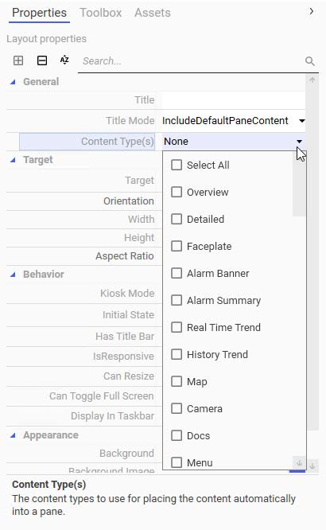
Section 3 – Layouts and Panes
Apply Content Types to Layouts
Content types can be assigned to a layout using the Content Type(s) property for the layout. This
is to specify the type of content represented by the layout. The default content type for a layout is
None, but one or more content types can be selected from the list. The None content type disables
the Auto-Fill feature.
The following shows only a partial list of available content types.
Review the key concepts section above for the core topics discussed.
Consider how the concepts in this lesson fit into the broader System Platform and OMI framework.